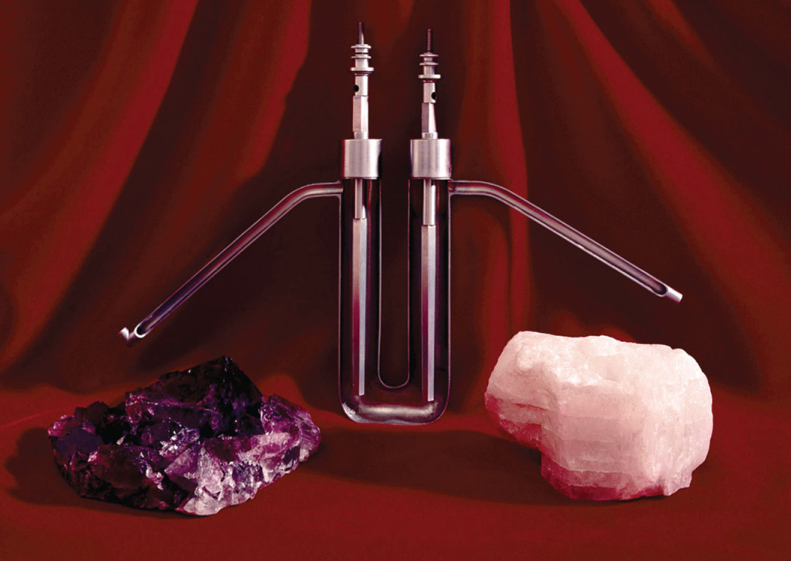
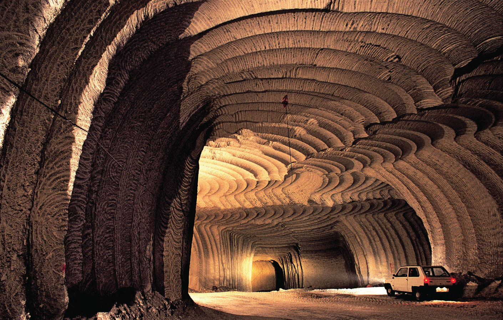

Because the halogens are highly reactive, none is found in nature as the free element. Hydrochloric acid, which is a component of aqua regia (a mixture of HCl and HNO3 that dissolves gold), and the mineral fluorspar (CaF2) were well known to alchemists, who used them in their quest for gold. Despite their presence in familiar substances, none of the halogens was even recognized as an element until the 19th century.
Because the halogens are highly reactive, none is found in nature as the free element.
Chlorine was the first halogen to be obtained in pure form. In 1774, Carl Wilhelm Scheele (the codiscoverer of oxygen) produced chlorine by reacting hydrochloric acid with manganese dioxide. Scheele was convinced, however, that the pale green gas he collected over water was a compound of oxygen and hydrochloric acid. In 1811, Scheele’s “compound” was identified as a new element, named from the Greek chloros, meaning “yellowish green” (the same stem as in chlorophyll, the green pigment in plants). That same year, a French industrial chemist, Bernard Courtois, accidentally added too much sulfuric acid to the residue obtained from burned seaweed. A deep purple vapor was released, which had a biting aroma similar to that of Scheele’s “compound.” The purple substance was identified as a new element, named iodine from the Greek iodes, meaning “violet.” Bromine was discovered soon after by a young French chemist, Antoine Jérôme Balard, who isolated a deep red liquid with a strong chlorine-like odor from brine from the salt marshes near Montpellier in southern France. Because many of its properties were intermediate between those of chlorine and iodine, Balard initially thought he had isolated a compound of the two (perhaps ICl). He soon realized, however, that he had discovered a new element, which he named bromine from the Greek bromos, meaning “stench.” Currently, organic chlorine compounds, such as PVC (polyvinylchloride), consume about 70% of the Cl2 produced annually; organobromine compounds are used in much smaller quantities, primarily as fire retardants.
Because of the unique properties of its compounds, fluorine was believed to exist long before it was actually isolated. The mineral fluorspar (now called fluorite [CaF2]) had been used since the 16th century as a “flux,” a low-melting-point substance that could dissolve other minerals and ores. In 1670, a German glass cutter discovered that heating fluorspar with strong acid produced a solution that could etch glass. The solution was later recognized to contain the acid of a new element, which was named fluorine in 1812. Elemental fluorine proved to be very difficult to isolate, however, because both HF and F2 are extraordinarily reactive and toxic. After being poisoned three times while trying to isolate the element, the French chemist Henri Moissan succeeded in 1886 in electrolyzing a sample of KF in anhydrous HF to produce a pale green gas (Figure 22.14 "Isolation of Elemental Fluorine"). For this achievement, among others, Moissan narrowly defeated Mendeleev for the Nobel Prize in Chemistry in 1906. Large amounts of fluorine are now consumed in the production of cryolite (Na3AlF6), a key intermediate in the production of aluminum metal. Fluorine is also found in teeth as fluoroapatite [Ca5(PO4)3F], which is formed by reacting hydroxyapatite [Ca5(PO4)3OH] in tooth enamel with fluoride ions in toothpastes, rinses, and drinking water.

A crystal of the mineral fluorite (CaF2). The purple color of some fluorite crystals is due to small inclusions of highly oxidizing impurities, which generate detectable amounts of ozone when the crystals are crushed.
Figure 22.14 Isolation of Elemental Fluorine
The French chemist Henri Moissan was the first person to isolate elemental fluorine. A reproduction of the U-shaped electrolysis cell with which Moissan first isolated elemental fluorine in 1866 is shown with samples of cryolite (left) and fluorspar (right). Fluorspar is the raw material from which anhydrous hydrofluoric acid (HF) is prepared. Cryolite is a rare mineral that contains the fluoride ion.
The heaviest halogen is astatine (At), which is continuously produced by natural radioactive decay. All its isotopes are highly radioactive, and the most stable has a half-life of only about 8 h. Consequently, astatine is the least abundant naturally occurring element on Earth, with less than 30 g estimated to be present in Earth’s crust at any one time.
All the halogens except iodine are found in nature as salts of the halide ions (X−), so the methods used for preparing F2, Cl2, and Br2 all involve oxidizing the halide. Reacting CaF2 with concentrated sulfuric acid produces gaseous hydrogen fluoride:
Equation 22.38
CaF2(s) + H2SO4(l) → CaSO4(s) + 2HF(g)Fluorine is produced by the electrolysis of a 1:1 mixture of HF and K+HF2− at 60–300°C in an apparatus made of Monel, a highly corrosion-resistant nickel–copper alloy:
Equation 22.39
Fluorine is one of the most powerful oxidants known, and both F2 and HF are highly corrosive. Consequently, the production, storage, shipping, and handling of these gases pose major technical challenges.
Figure 22.15 A Subterranean Salt Mine
Subterranean deposits of rock salt are located worldwide, such as this one at Petralia in Sicily.
Although chlorine is significantly less abundant than fluorine, elemental chlorine is produced on an enormous scale. Fortunately, large subterranean deposits of rock salt (NaCl) are found around the world (Figure 22.15 "A Subterranean Salt Mine"), and seawater consists of about 2% NaCl by mass, providing an almost inexhaustible reserve. Inland salt lakes such as the Dead Sea and the Great Salt Lake are even richer sources, containing about 23% and 8% NaCl by mass, respectively. Chlorine is prepared industrially by the chloralkali process, which uses the following reaction:
Equation 22.40
Bromine is much less abundant than fluorine or chlorine, but it is easily recovered from seawater, which contains about 65 mg of Br− per liter. Salt lakes and underground brines are even richer sources; for example, the Dead Sea contains 4 g of Br− per liter. Iodine is the least abundant of the nonradioactive halogens, and it is a relatively rare element. Because of its low electronegativity, iodine tends to occur in nature in an oxidized form. Hence most commercially important deposits of iodine, such as those in the Chilean desert, are iodate salts such as Ca(IO3)2. The production of iodine from such deposits therefore requires reduction rather than oxidation. The process is typically carried out in two steps: reduction of iodate to iodide with sodium hydrogen sulfite, followed by reaction of iodide with additional iodate:
Equation 22.41
2IO3−(aq) + 6HSO3−(aq) → 2I−(aq) + 6SO42−(aq) + 6H+(aq)Equation 22.42
5I−(aq) + IO3−(aq) + 6H+(aq) → 3I2(s) + 3H2O(l)Because the halogens all have ns2np5 electron configurations, their chemistry is dominated by a tendency to accept an additional electron to form the closed-shell ion (X−). Only the electron affinity and the bond dissociation energy of fluorine differ significantly from the expected periodic trends shown in Table 22.6 "Selected Properties of the Group 17 Elements". Electron–electron repulsion is important in fluorine because of its small atomic volume, making the electron affinity of fluorine less than that of chlorine. Similarly, repulsions between electron pairs on adjacent atoms are responsible for the unexpectedly low F–F bond dissociation energy. (As discussed earlier, this effect is also responsible for the weakness of O–O, N–N, and N–O bonds.)
Oxidative strength decreases down group 17.
Electrostatic repulsions between lone pairs of electrons on adjacent atoms cause single bonds between N, O, and F to be weaker than expected.
Table 22.6 Selected Properties of the Group 17 Elements
| Property | Fluorine | Chlorine | Bromine | Iodine | Astatine |
|---|---|---|---|---|---|
| atomic symbol | F | Cl | Br | I | At |
| atomic number | 9 | 17 | 35 | 53 | 85 |
| atomic mass (amu) | 19.00 | 35.45 | 79.90 | 126.90 | 210 |
| valence electron configuration* | 2s22p5 | 3s23p5 | 4s24p5 | 5s25p5 | 6s26p5 |
| melting point/boiling point (°C) | −220/−188 | −102/−34.0 | −7.2/58.8 | 114/184 | 302/— |
| density (g/cm3) at 25°C | 1.55 | 2.90 | 3.10 | 4.93 | — |
| atomic radius (pm) | 42 | 79 | 94 | 115 | 127 |
| first ionization energy (kJ/mol) | 1681 | 1251 | 1140 | 1008 | 926 |
| normal oxidation state(s) | −1 | −1 (+1, +3, +5, +7) | −1 (+1, +3, +5, +7) | −1 (+1, +3, +5, +7) | −1, +1 |
| ionic radius (pm)† | 133 | 181 | 196 | 220 | — |
| electron affinity (kJ/mol) | −328 | −349 | −325 | −295 | −270 |
| electronegativity | 4.0 | 3.2 | 3.0 | 2.7 | 2.2 |
| standard reduction potential (E°, V) (X2 → X− in basic solution) | +2.87 | +1.36 | +1.07 | +0.54 | +0.30 |
| dissociation energy of X2(g) (kJ/mol) | 158.8 | 243.6 | 192.8 | 151.1 | ~80 |
| product of reaction with O2 | O2F2 | none | none | none | none |
| type of oxide | acidic | acidic | acidic | acidic | acidic |
| product of reaction with N2 | none | none | none | none | none |
| product of reaction with H2 | HF | HCl | HBr | HI | HAt |
| *The configuration shown does not include filled d and f subshells. | |||||
| †The values cited are for the six-coordinate anion (X−). | |||||
Because it is the most electronegative element in the periodic table, fluorine forms compounds in only the −1 oxidation state. Notice, however, that all the halogens except astatine have electronegativities greater than 2.5, making their chemistry exclusively that of nonmetals. The halogens all have relatively high ionization energies, but the energy required to remove electrons decreases substantially as we go down the column. Hence the heavier halogens also form compounds in positive oxidation states (+1, +3, +5, and +7), derived by the formal loss of ns and np electrons.
Because ionization energies decrease down the group, the heavier halogens form compounds in positive oxidation states (+1, +3, +5, and +7).
Fluorine is the most reactive element in the periodic table, forming compounds with every other element except helium, neon, and argon. The reactions of fluorine with most other elements range from vigorous to explosive; only O2, N2, and Kr react slowly. There are three reasons for the high reactivity of fluorine:
With highly electropositive elements, fluorine forms ionic compounds that contain the closed-shell F− ion. In contrast, with less electropositive elements (or with metals in very high oxidation states), fluorine forms covalent compounds that contain terminal F atoms, such as SF6. Because of its high electronegativity and 2s22p5 valence electron configuration, fluorine normally participates in only one electron-pair bond. Only a very strong Lewis acid, such as AlF3, can share a lone pair of electrons with a fluoride ion, forming AlF63−.
The halogens (X2) react with metals (M) according to the general equation
Equation 22.43
M(s,l) + nX2(s,l,g) → MXn(s,l)For elements that exhibit multiple oxidation states fluorine tends to produce the highest possible oxidation state and iodine the lowest. For example, vanadium reacts with the halogens to give VF5, VCl4, VBr4, and VI3.
Metal halides in the +1 or +2 oxidation state, such as CaF2, are typically ionic halides, which have high melting points and are often soluble in water. As the oxidation state of the metal increases, so does the covalent character of the halide due to polarization of the M–X bond. With its high electronegativity, fluoride is the least polarizable, and iodide, with the lowest electronegativity, is the most polarizable of the halogens. Halides of small trivalent metal ions such as Al3+ tend to be relatively covalent. For example, AlBr3 is a volatile solid that contains bromide-bridged Al2Br6 molecules. In contrast, the halides of larger trivalent metals, such as the lanthanides, are essentially ionic. For example, indium tribromide (InBr3) and lanthanide tribromide (LnBr3) are all high-melting-point solids that are quite soluble in water.
As the oxidation state of the metal increases, the covalent character of the corresponding metal halides also increases due to polarization of the M–X bond.
All halogens react vigorously with hydrogen to give the hydrogen halides (HX). Because the H–F bond in HF is highly polarized (Hδ+–Fδ−), liquid HF has extensive hydrogen bonds, giving it an unusually high boiling point and a high dielectric constant. As a result, liquid HF is a polar solvent that is similar in some ways to water and liquid ammonia; after a reaction, the products can be recovered simply by evaporating the HF solvent. (Hydrogen fluoride must be handled with extreme caution, however, because contact of HF with skin causes extraordinarily painful burns that are slow to heal.) Because fluoride has a high affinity for silicon, aqueous hydrofluoric acid is used to etch glass, dissolving SiO2 to give solutions of the stable SiF62− ion.
Glass etched with hydrogen flouride.
© Thinkstock
Except for fluorine, all the halogens react with water in a disproportionation reaction, where X is Cl, Br, or I:
Equation 22.44
X2(g,l,s) + H2O(l) → H+(aq) + X−(aq) + HOX(aq)The most stable oxoacids are the perhalic acids, which contain the halogens in their highest oxidation state (+7). The acid strengths of the oxoacids of the halogens increase with increasing oxidation state, whereas their stability and acid strength decrease down the group. Thus perchloric acid (HOClO3, usually written as HClO4) is a more potent acid and stronger oxidant than perbromic acid. Although all the oxoacids are strong oxidants, some, such as HClO4, react rather slowly at low temperatures. Consequently, mixtures of the halogen oxoacids or oxoanions with organic compounds are potentially explosive if they are heated or even agitated mechanically to initiate the reaction. Because of the danger of explosions, oxoacids and oxoanions of the halogens should never be allowed to come into contact with organic compounds.
Both the acid strength and the oxidizing power of the halogen oxoacids decrease down the group.
The halogens react with one another to produce interhalogen compounds, such as ICl3, BrF5, and IF7. In all cases, the heavier halogen, which has the lower electronegativity, is the central atom. The maximum oxidation state and the number of terminal halogens increase smoothly as the ionization energy of the central halogen decreases and the electronegativity of the terminal halogen increases. Thus depending on conditions, iodine reacts with the other halogens to form IFn (n = 1–7), ICl or ICl3, or IBr, whereas bromine reacts with fluorine to form only BrF, BrF3, and BrF5 but not BrF7. The interhalogen compounds are among the most powerful Lewis acids known, with a strong tendency to react with halide ions to give complexes with higher coordination numbers, such as the IF8− ion:
Equation 22.45
IF7(l) + KF(s) → KIF8(s)All group 17 elements form compounds in odd oxidation states (−1, +1, +3, +5, +7). The interhalogen compounds are also potent oxidants and strong fluorinating agents; contact with organic materials or water can result in an explosion.
All group 17 elements form compounds in odd oxidation states (−1, +1, +3, +5, +7), but the importance of the higher oxidation states generally decreases down the group.
For each reaction, explain why the given products form.
Given: balanced chemical equations
Asked for: why the given products form
Strategy:
Classify the type of reaction. Using periodic trends in atomic properties, thermodynamics, and kinetics, explain why the observed reaction products form.
Solution:
Exercise
Predict the products of each reaction and write a balanced chemical equation for each reaction.
Answer:
The halogens are so reactive that none is found in nature as the free element; instead, all but iodine are found as halide salts with the X− ion. Their chemistry is exclusively that of nonmetals. Consistent with periodic trends, ionization energies decrease down the group. Fluorine, the most reactive element in the periodic table, has a low F–F bond dissociation energy due to repulsions between lone pairs of electrons on adjacent atoms. Fluorine forms ionic compounds with electropositive elements and covalent compounds with less electropositive elements and metals in high oxidation states. All the halogens react with hydrogen to produce hydrogen halides. Except for F2, all react with water to form oxoacids, including the perhalic acids, which contain the halogens in their highest oxidation state. Halogens also form interhalogen compounds; the heavier halogen, with the lower electronegativity, is the central atom.
The lightest elements of groups 15, 16, and 17 form unusually weak single bonds. Why are their bonds so weak?
Fluorine has an anomalously low F–F bond energy. Why? Why does fluorine form compounds only in the −1 oxidation state, whereas the other halogens exist in multiple oxidation states?
Compare AlI3, InCl3, GaF3, and LaBr3 with respect to the type of M–X bond formed, melting point, and solubility in nonpolar solvents.
What are the formulas of the interhalogen compounds that will most likely contain the following species in the indicated oxidation states: I (+3), Cl (+3), I (−1), Br (+5)?
Consider this series of bromides: AlBr3, SiBr4, and PBr5. Does the ionic character of the bond between the Br atoms and the central atom decrease or increase in this series?
Chromium forms compounds in the +6, +3, and +2 oxidation states. Which halogen would you use to produce each oxidation state? Justify your selections.
Of ClF7, BrF5, IF7, BrF3, ICl3, IF3, and IF5, which one is least likely to exist? Justify your selection.
Electrostatic repulsions between lone pairs on adjacent atoms decrease bond strength.
Ionic character decreases as Δχ decreases from Al to P.
ClF7
SiF4 reacts easily with NaF to form SiF62−. In contrast, CF4 is totally inert and shows no tendency to form CF62− under even extreme conditions. Explain this difference.
Predict the products of each reaction and then balance each chemical equation.
Write a balanced chemical equation for the reaction of aqueous HF with
Oxyhalides of sulfur, such as the thionyl halides (SOX2, where X is F, Cl, or Br), are well known. Because the thionyl halides react vigorously with trace amounts of water, they are used for dehydrating hydrated metal salts. Write a balanced chemical equation to show the products of reaction of SOCl2 with water.
Write a balanced chemical equation describing each reaction.
Write the complete Lewis electron structure, the type of hybrid used by the central atom, and the number of lone pair electrons present on the central atom for each compound.
Carbon has no low energy d orbitals that can be used to form a set of d2sp3 hybrid orbitals. It is also so small that it is impossible for six fluorine atoms to fit around it at a distance that would allow for formation of strong C–F bonds.